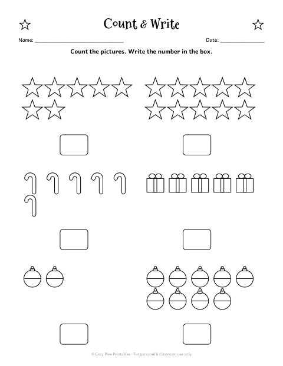
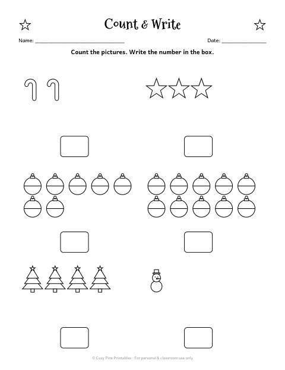
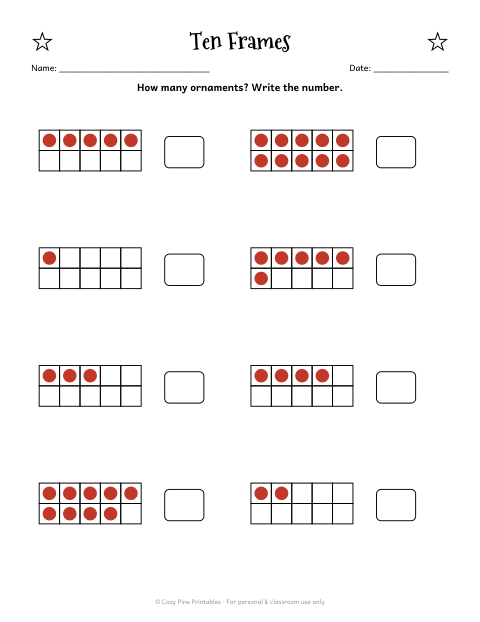
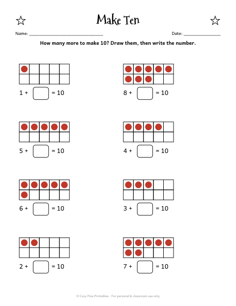
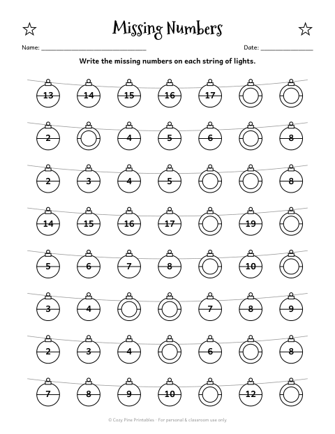
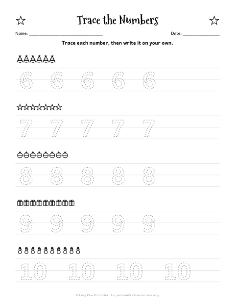
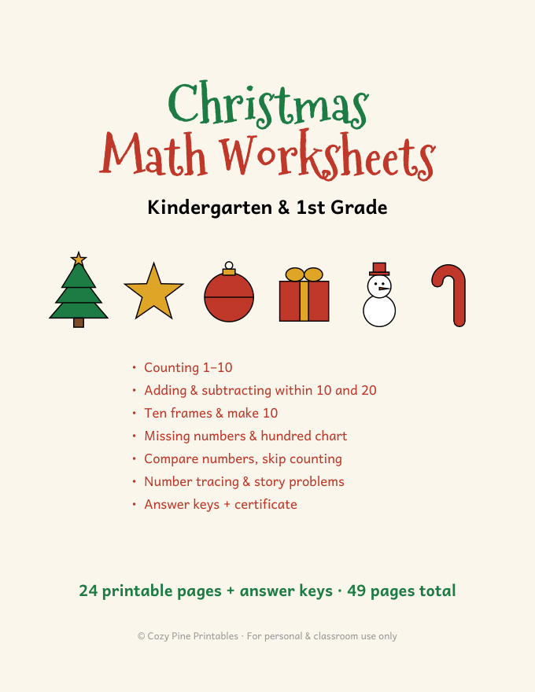
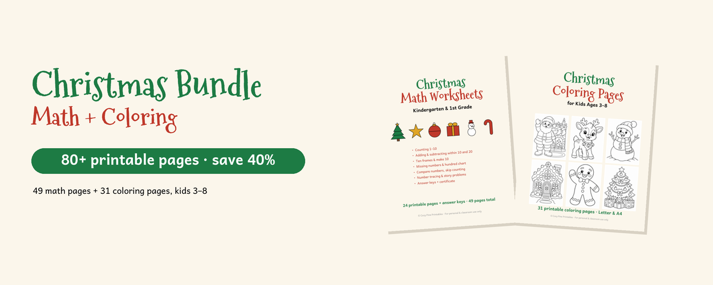

Christmas Ten Frames & Counting Worksheets
Kindergarten · counting, ten frames, make ten
Counting is the heart of kindergarten math, and Christmas makes it fun: kids count trees, stars and presents, fill ten frames with ornaments and find how many more make ten.
These pages build number sense step by step — from counting pictures to seeing ten as "five and five" — and finish with number order and tracing numbers 6–10.
The free sample has Count & Write 1–10, Missing Numbers and Number Tracing 1–5:
⬇ Download 5 free math worksheets (PDF)Free PDF includes:
- Count & Write 1–10
- Adding to Ten
- Missing Numbers
- Compare Numbers (>, <, =)
- Number Tracing 1–5
Counting pages in the full pack






Christmas Math Worksheets K–1

- 24 worksheets: ten frames, make ten, addition & subtraction to 20, hundred chart, skip counting, number tracing 1–10, story problems
- Answer keys for every page
- "Christmas Math Star" certificate
- 49 pages · instant PDF download
$5.99
Get the full 49-page pack →Christmas Bundle: Math + Coloring

- Both packs: 49-page Christmas Math Worksheets + 31 Christmas coloring pages
- 80+ printable pages · 2 PDF files · instant download
- $10.99 if bought separately — save 40%
$6.43
Get the bundle →Make it hands-on
- Before the ten frame pages, let kids fill a paper ten frame with real mini pom-poms or cereal.
- Ask "how many more to make ten?" out loud while decorating the tree.
- Do one page a day during the December countdown.